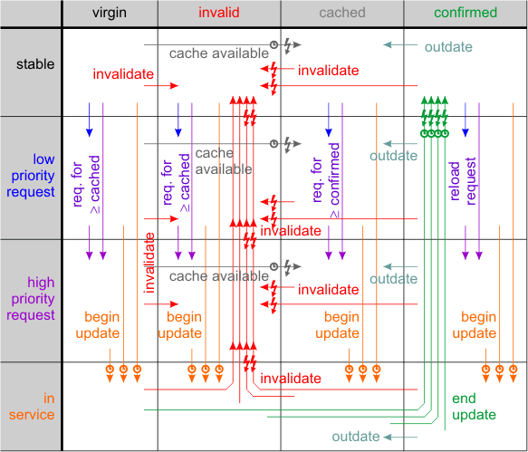

The properties of a playable object are grouped into different information types. Each group of information can be requested and observed individually. The groups fit into the following categories:
Object information
The object information lies on the
entity URL. It
consists of
- Physical
information,
- Technical
information and
- Detailed object
information.
Logical object information
The logical object information also lies on the entity URL but it
may be overridden by PlayableRef.
It consists of
- Meta
information
and
- Object
attributes.
Aggregate information
The aggregate information lies on the entity URL with all
parent URLs in the call stack. This is because all items in
the call stack are excluded from enumeration to avoid recursions. It
makes the aggregate information dependent on the point of view.
It consists of
- Recursive
playlist information and
- Detailed
recursive
playlist information.
The aggregate information also applies to song items that cannot
contain sub items in the way that it takes care of slices
- unlike the detailed object information.
Unlike all other kind of information the aggregate
information should be requested by RequestAggregateInfo.
Furthermore it does not have its own events for each call stack. The
event fires if any
of the aggregate informations change. So if you want to track changes
of individual entries you have to compare the revision number of the
returned information. It is incremented on each update.
Object reference information
This kind of info lies on the entity PlayableRef.
Native objects do not have this properties. Currently this is only
- Playlist
item information.
Runtime information
This kind of information is not an object property. It is calculated at
runtime from one or more of the other informations above.
Each group of information has the following states:
Once a type of information is provided it will never return to the state virgin. In doubt outdated information is returned.
When you request some kind of information you have the choice to do this with different reliability requirements:
Furthermore you may chose a priority level:
The following graph illustrates all valid state transitions. All changes are transactional.

The flash symbols indicate that a state change
event informs the observers.
The clock symbols indicate that the state
transition occurs in synchronized context. Any
other transitions are lock-free. Note that the state
transitions are
synchronized, not the retrieval of the information. This is done while
in service. And the synchronized part is like a commit work.
The processes that cause state transitions are:
Info request - An Information might be requested either at low or at high priority. The information is then obtained asynchronously by a worker thread. Use the InfoChange event to wait for the desired information to become available.
Begin update - Once a worker thread picks up a request it marks the information as in service. Only one thread can mark an information as in service at a time. The begin update process is seperately synchronized for each playable object but the object must not be locked while the information is retrieved.
End update
- When the information has been retrieved it is applied synchronized
and it's state is set to confirmed.
Exception: if the information has been invalidated while it was in
service PM123 assumes that too old infos might have been used and the
state
remains invalid.
End update raises the InfoChanged
event with Loaded and maybe Changed.
Note that the information might have been invalidated meanwhile and
therefore may not have the desired reliability at the point of this
event. You need to reschedule the requst if this is not suitable. But
beware of infinite loops.
Invalidate
- Sometimes an information is invalidated. If the information was at
least in cached state before the InfoChage
event is raised with Invalidated
immediately. Invalidation also changes the state from virgin to invalid
to avoid that (invalid) cached information is applied later.
Invalidation
happens for instance when an item is added to a playlist. In this case
the total playing time of this playlist and all lists that refer to it
is invalidated.
Invalidating
an information does not automatically
cause the information to be reloaded unless the invalidation occurs
while the information is in service. In this case the previous request
state is restored. Otherwise it has to be requested again. If you need
to be always up
to date place a request in the InfoChange event
handler if an Invalidated event arrives.
Cache available - When PM123 loads a playlist the playlist may contain cached information about its content. This will speed up PM123 because not all objects have to be requested for information. On the other hand outdated information may show up. Cached information is applied synchronized and only if this kind of information is not yet available or invalidated (virgin). In case the information changes InfoChange with Change is raised. Note that the Loaded flag is not included in this case since nothing has been recently loaded.
Outdate - PM123 may mark an information that has been retrieved a long time ago as outdated. The state is set to cached. This does not raise any event.